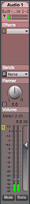
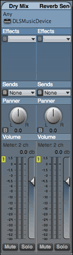
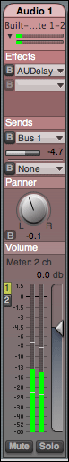
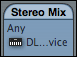
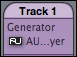
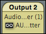
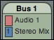
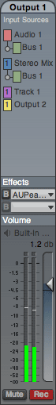
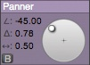
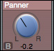

Summary: This section describes the various visual components of the document window. It defines terms that will be used throughout this documentation, and details the various group types that are contained in the document. Additionally, it describes how to map MIDI controllers to specific controls in the document window.
The AU Lab document window presents a visual representation of the document. A document may contain one or more of three distinct group types: Inputs Tracks, Buses, and Outputs. A document must contain at least one output group and any number of input tracks or bus groups.
|

|

|
|
Group with one track |
Group with two tracks |
Throughout this document, we will refer to items in the first group as Input Tracks. It is important to make a distinction between the entity we will refer to as a group and the entity we will refer to as a track. As the diagram on the right illustrates, a group is a colored graphical element that contains a rounded top with a title bar displaying the name of the group.
Each group contains one or more vertical tracks that contain various sections such as an effects section, and a panner section. The image at the right illustrates a group with a single audio track, and a group with two MIDI tracks.
The name of a track always appears in the title area of each group. As the image indicates, tracks should have unique names. These may be edited by double-clicking in the track name and changing the text in the corresponding group editor.
The document window also has a status message area at the bottom of the screen. This status area typically shows the state of the Audio Engine.
|
Normal Engine State |
Stopped Engine State |
Clicking the engine state status item will toggle the state. When the engine is stopped, no audio processing will occur.
Warning messages can also appear in this status area. The most common warning message is an overload message. This occurs when there is more audio processing than can be completed in the time allocated on a device’s render cycle. For more information on audio overloads, see Device Preferences.
|
Overload Warning |
To clear this or any other warning, click on the message.
Input Track groups represent a single audio input source such as the input of an audio device or the input of an audio unit instrument or generator. The audio can then be sent through an effect chain and panner, and then through a mixer to the output. Input track groups may contain one or more tracks and are always grouped from the left most edge of the window.
Buses route audio that is sent from input tracks through an effect chain and panner, and then through a mixer to the output. Buses are positioned to the right of any input tracks in the document. Bus groups may only contain a single track.
An Output group represents a discrete output on the output device. It may also have an effect chain and a final output mixer. This group may have more than track.
An Audio input track is a specific type of input track group where the input source is a specific range of channels of an audio device. All audio inputs are contained in a named input group. Each track has a number of discrete sections that control specific functionality and allow editing of settings on the track. Audio Input tracks can be created by choosing Add Audio Track… from the Edit menu. To edit the properties of an existing input track, double-click on the track’s header (title) bar, or select the track and choose Edit Selected Group… from the Edit menu. See Adding and editing audio input tracks for more information.
|  | Source Section: Audio Input Tracks receive their input from specific channels of an audio device. This section displays the name (in this case, "Built-in Audio") and channels (1-2) of the source audio device. The source section also has an input level meter. You may click the disclosure triangle to hide the meter. |
| Effects Section: Input tracks can contain one or more effects. This list is initially empty, but new effects can be added by selecting them from the popup menu. If the effect supports bypassing, it can be bypassed by clicking the B button. See Editing Effects for more info. | |
| Sends Section: Tracks can send part of their output to another track known as a Bus. Input Tracks are created without sends. New sends may be added by choosing Create Bus… from the popup menu. Sends can be bypassed and the send level can be changed. See Editing Sends for more information. | |
| Panner Section: The pan value can be modified directly by dragging the control or by clicking in the Pan text and typing a new value and hitting Enter or Return. The panner also has a bypass button in the lower left hand corner. It may also be mapped to a MIDI control. The pan style can be modified in the Preferences panel. | |
Volume Section: The volume section contains a fader and output meters for the track. The fader displays the current track volume gain in decibels and the meters display the current level of the output. The line represents the 0dB mark for the volume slider. You can adjust the gain by clicking at any point in the fader or by dragging the triangular slider. Additionally, you may edit the gain numerically by clicking in the text field, typing a new value and pressing Enter or Return. To the left of the input fader is the output button group. This button group specifies which outputs will be connected to the current input track. There is a button corresponding to each output that toggles this connection. If a button is highlighted, audio will be sent to the corresponding output. For example, the image at the left shows that the input track is going to output 1, but not output 2. To send the track to outputs 1 and 2, the user would click the 2 button which would then highlight to indicate that it is an active output destination. A track can also be unassigned to any of the outputs (for instance if you just want to send to an effect bus). The volume section also contains mute and solo buttons. The mute button temporarily disconnects the track from its outputs and the solo button mutes all tracks that are not marked as solo. The volume slider, mute, solo, and output assignment buttons may all be mapped to MIDI controls. |
Audio Unit Instrument Tracks appear identically to Audio Input Tracks except for the source section which is slightly different. To add an Audio Unit Instrument to the document, choose Add Audio Unit Instrument… from the Edit menu. To edit the properties of an existing instrument track, double-click on the group’s title bar, or select the track and choose Edit Selected Group… from the Tracks menu. See Adding and Editing Audio Unit Instruments for more information.
The source section for an audio unit instrument shows the name of the MIDI endpoint destination and has a button that will show the inspector for the source Audio Unit. See Using the Inspector for more information.
Generators are Audio Units that create audio programmatically either from an audio file, or algorithmically. Generator Input Tracks appear identically to Audio Unit Instrument Tracks except for the source section which varies slightly. To add a generator to the current document, choose Add Audio Unit Generator… from the Edit Menu. To edit the properties of an existing generator track, double-click on the group’s title bar, or select the track and choose Edit Selected Group… from the Edit menu.
The source section for an audio unit generator shows the name of the generator unit and a button that shows the inspector for the source Audio Unit. See Using the Inspector for more information.
Generator tracks also can have converter units added to the insert effect section. See Converter Units for more information.
Sidechain tracks are a special type of track that takes its audio from the output of an Audio Unit in a separate track. Sidechain Tracks appear identically to Audio Unit Instrument Tracks except for the source section which varies slightly. To edit the properties of an existing generator track, double-click on the group’s title bar, or select the track and choose Edit Selected Group… from the Edit menu. See Output Sidechains for more information on adding sidechains to the document.
The source section for a sidechain source shows the name of the source unit and a button that shows the inspector for the source Audio Unit. It also displays the source track and effect name that is the source of the track. See Using the Inspector for more information.
Buses are a single track group that can take any audio sent to them from any of input tracks. For a given input track, the Send control assigns its audio to a bus. They can be created by choosing Add Bus… from the Edit menu. To edit the properties of an existing bus, double-click on the bus group’s title bar, or select the bus and choose Edit Selected Group… from the Edit menu.
A bus’ UI is similar to an input track; the source section shows which tracks are sending to a given bus. A bus also does not have a solo button, however it can be muted or unassigned from any output.
The output group consist of one or more outputs, each of which represents a specific channel or channels of the device. Additional outputs cannot be added once the document is created. To edit the properties of an output, double-click on the output group’s title bar.
|  | Source Section: The input sources section shows the tracks and buses that are connected to the current output. The image on the left indicates that this output has two input sources that provide audio data: Audio 1 and Output 1. It also shows that Audio 1 has a Bus called bus 1 that contributes to the output. |
| Effects Section: Like input tracks, an output has an effect stage. Effects are applied to all audio routed to a particular output. See Editing Effects for more info on configuring track effects. | |
| Volume Section: The volume section is very similar to the volume section of an input track or bus. The section has a label that displays the output channels and device of the output. It also has a volume fader and a level meter. However, the level on the meter only goes to 0 db. Any level above this value indicates that the signal is clipping and the clipping indicator above the meter will light. The clip indicator will dim once the signal is no longer clipping, but remain lit to indicate a clip has occurred. To clear the clip indicator, click on it.
The volume section also has a record button to the right of the mute. This button controls recording of the output track to an audio file on disk. To start recording, press the button. The button will highlight to indicate that recording is in progress. To stop recording, press the button again. Recording options can be changed in the Recording Preferences pane. The volume, mute, and record buttons may be mapped to a MIDI controller. |
Tracks that are created as multichannel appear slightly differently appearance in the document window. The tracks are slightly wider to accommodate the additional meters in the volume section, and the panner is significantly different from the stereo panner.
As the image on the right shows, this document has two outputs- a surround (5 channel) output, and a stereo (two channel) output and a stereo audio input and a stereo fileplayer input.
Both tracks use a multichannel panner, although the audio track has the panner disabled. The multichannel panner has three different properties: angle, distance, and spread. These values are also represented numerically to the left of the panner and can be edited by clicking on the appropriate edit text field and changing the value by typing a new value and pressing the enter key.
Angle: The angle between the zero position (12 o’clock position) and the knob. Angles change from 0° to 180° clockwise on the right half of the panner, and from 0° to -180° on the left half of the panner. The angle is changed by dragging the knob. In the image (above left), the knob is at an angle of -45°. Note that you can lock the distance and change only the angle by holding down the shift key while moving the knob.
Distance: The distance is the distance in meters between the listener (at the center of the panner) and the source (represented by the knob). To decrease the distance, drag the knob towards the center, and to increase the distance, drag the knob away from the center. The center of the panner represents 0 meters, while the outside edge of the panner is 1 meter. In the image above, the knob is at a distance of 0.78 meters. Note that you can lock the angle and change only the distance by holding down the control key while moving the knob.
Spread: The spread is a measure of how focused the sound is. As the spread value approaches 0, the speaker is more localized to a specific speaker. As the spread value increases, the sound is spread among the surround speakers more. To change the spread, edit the value of the textfield. The image above shows a spread value of 0.5.
Controls such as a track’s volume slider, mute button, solo button, and panner knob may be mapped to a controller on a MIDI device. Once a mapping is established, changing the value of the MIDI control will change the value of that corresponding control.
To establish a mapping between a control and a MIDI controller, hold the MIDI Hotmap Modifier Key (the default is command) and click the control that you wish to map. Once the control has been clicked, the control will highlight in blue. To complete the hotmap, move the control on the MIDI controller that you want to link to the highlighted control. Once the hotmap is complete, the control will return to its original appearance and will be linked to the specified MIDI controller. Moving the MIDI controller should move the corresponding control.
See MIDI Mappings Window for more information on creating and editing MIDI mappings.